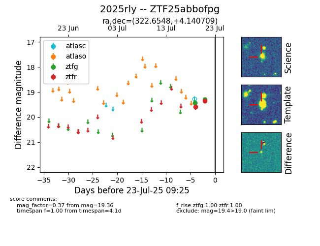

Target ZTF25abbofpg at 2025-07-23 11:48, see:
FINK: fink-portal.org/ZTF25abbofpg
Lasair: lasair-ztf.lsst.ac.uk/objects/ZTF25abbofpg
ALeRCE: alerce.online/object/ZTF25abbofpg
TNS: wis-tns.org/object/2025rly
YSE: ziggy.ucolick.org/yse/transient_detail/2025rly
alt names
ZTF25abbofpg (ztf,fink)
2025rly (tns,yse)
coordinates:
equatorial (ra, dec) = (322.6548,+4.14071)
galactic (l, b) = (57.8093,-32.35898)
photometry
last ztfg=19.30, ztfr=19.36
2 ztfg, 2 ztfr detections
